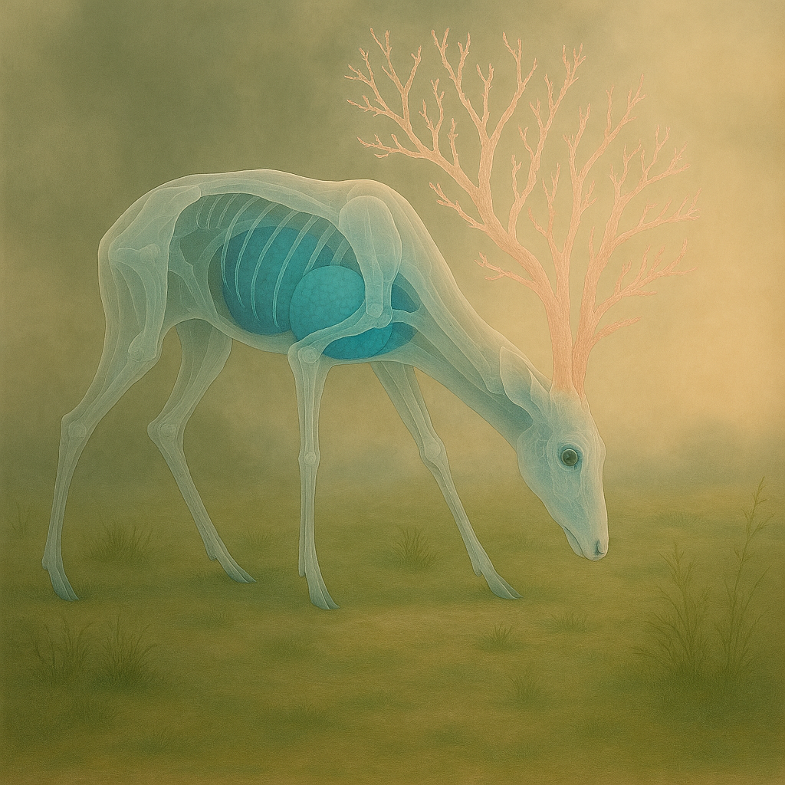
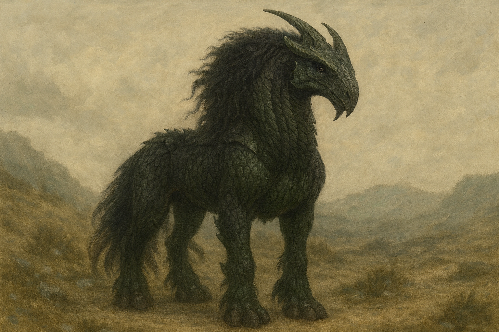
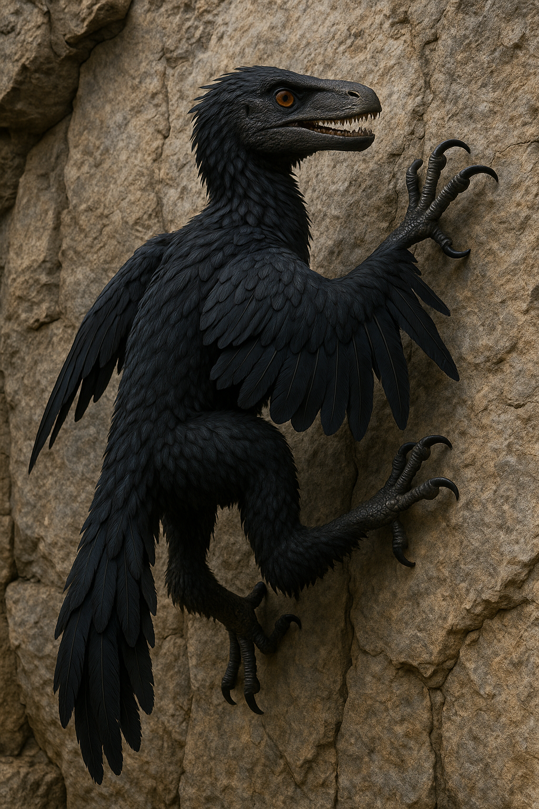

The Borra — a spindly grazer of Korranthis with translucent flesh and coral-like antlers. Elusive, fragile, yet enduring, it survives not by strength, but by vanishing into light.
The Borra is a gentle herbivore native to Korranthis, recognizable by its spindly limbs, fragile coral-like antlers, and its most haunting trait: semi-transparent flesh. Through its glasslike skin, faint shapes can be glimpsed—pale organs suspended in shimmering blue, like shadows adrift within a body of light.
The Borra’s translucency is not merely a curiosity of evolution; it is survival. On Korranthis, where predators stalk with sight sharper than steel and where the gravity presses every lifeform into lean efficiency, the Borra adapted by becoming almost invisible. In the heat-shimmer of the plains or the silver haze of dawn, a Borra’s body bends the light around it, blurring outline and motion. To a hunter’s eye, it is less a creature than a ripple in the air.
The coral-like antlers, though delicate, serve as both display and defense. When light filters through them, they scatter faint prisms across the ground—signals to other Borra that a herd is near. Their bodies, thin as reeds yet deceptively strong, allow them to bound across the iron-hued grasses with a grace that belies their frailty.
Where other grazers rely on speed or armor, the Borra survives by being unseen, a fleeting shimmer on the horizon, an echo of life more felt than observed. To the people of Korranthis, it is both a symbol of fragility and endurance—proof that beauty can be as much a shield as bone or muscle.
Where other grazers rely on speed or armor, the Borra survives by being unseen, a fleeting shimmer on the horizon, an echo of life more felt than observed. To the people of Korranthis, it is both a symbol of fragility and endurance—proof that beauty can be as much a shield as bone or muscle.

Grax-Beast
The six-legged Grax-beast is one of Korranthis’s most feared native predators. Though no larger than a big hunting dog, it is a creature shaped by a world of crushing gravity—nearly three times that of Earth. To survive in such an environment, the Grax-beast evolved six powerful legs, each joint built to absorb enormous strain and propel its elongated body with unnerving speed.
Its hide is sheathed in dull, overlapping chitin plates that shimmer faintly in the light, armor strong enough to turn aside spearpoints and most primitive weapons. Each plate locks over the next like scales of living stone, giving the beast a segmented, almost insectile appearance. Despite this bulk, its movements are unnervingly fluid. Every step is placed with calculated silence, making it a master of ambush.
Fast and relentless, the Grax-beast is a predator that hunts alone. It favors stalking from shadowed ridges or burrows, lunging at prey with explosive force once close enough to strike. Its low, rasping growl is rarely heard until it is too late. To bring one down requires coordinated effort, for no single hunter can hope to withstand its speed, armor, and ferocity.
On Korranthis, even children are taught to read the signs of a Grax-beast: claw-marks gouged deep into stone, the drag of its tail through dust, or the sudden silence of smaller creatures fleeing the brush. Though only dog-sized, it is rightly feared. To cross its path unprepared is to risk becoming another story whispered around tribal fires, of those who were too slow when the Grax-beast crept forward out of the dark.

Drayven – The Great Horned Mounts of Edson
The Drayven are among the most iconic creatures of Edson, known as the great horned mounts of kings, warlords, and scouts. Their massive bodies are sheathed in scaled hide that glistens like wet stone, natural armor strong enough to turn aside blades and arrows. Beneath that armor, muscle ripples with raw strength, each stride carrying them across terrain where no machine could follow.
From their foreheads rises a crown of jagged horns, sharp and irregular, as though carved from the same stone as the cliffs they roam. The horns do not sweep forward like lances, but arc upward and outward, a crown both regal and fearsome. Their eyes glow faintly in half-light, intelligent and watchful, betraying a predator’s cunning even when pressed into service as steeds. Long manes of coarse black hair spill down their necks like storm clouds, framing their armored heads in a mantle of shadow and power.
On Edson, the Drayven are prized not merely for their strength, but for what they make possible. In a world of jagged cliffs, fractured valleys, and unstable skies, even cloaked skimmers struggle. Engines flare on scanners, wings falter in crosswinds, and magnetic storms scramble sensors. But Drayven move with silence and certainty, guided by instinct born of the land. They scale sheer rock faces, weave through narrow gullies, and carry their riders farther and quieter than any machine.
To ride a Drayven is to earn its respect—a bond forged in patience and courage. Tribes and kingdoms both revere them, not only as beasts of burden but as symbols of endurance, loyalty, and untamed power. In battle, lines of Drayven-mounted warriors can shatter infantry, their horns gleaming like a jagged crown of war. In stealth, a single rider and mount can cross miles of hostile ground without leaving a trace.
For these reasons, many choose Drayven over high-tech transports, even in an age of machines. They are flesh and bone, silence and storm, the living mounts of Edson’s most daring riders.

The Crellyan
The Crellyan is a shadow-born predator, half-bird and half-dinosaur in form, revered and feared as a messenger of ancient houses. Cloaked in sleek black feathers that shimmer faintly in dim light, its body carries the unmistakable power of a creature forged for survival. Its hindlimbs are feathered and muscular, ending in cruel, taloned feet that can rend stone or prey alike. From the crook of each wing protrude hooked climbing claws, allowing it to scale cliffs and walls with the precision of a raptor.
Unlike ordinary birds, the Crellyan does not bear a beak. Instead, it possesses elongated jaws lined with sharp, predatory teeth—an unsettling reminder of its primal ancestry. Its unblinking eyes burn with an amber intensity, betraying intelligence as much as instinct. When still, the Crellyan can seem statuesque, as if carved from midnight itself, but when it moves, it is swift, deliberate, and eerily silent.
Once used by noble houses as living couriers, the Crellyan is said to remember its bonds across decades, returning faithfully to those who once entrusted it with their messages. When it accepts a scrollcase, it does so with careful precision, gripping it gently between its tooth-lined jaws—an unsettling contrast to the raw lethality of its bite.
To encounter a Crellyan is to feel watched, measured, and judged, for these creatures are not mindless beasts. They are keepers of memory, climbing shadows with wings, whose loyalty is rare, but unbreakable once earned.

The Silverwing
The Silverwing is a solitary raptor of Edson’s skies, a hunter as swift as it is elusive. Smaller and leaner than the great Crellyan, it shares the same predatory grace but channels it into speed and precision rather than power. Its plumage is a warm, earthy brown, but the edges of its feathers are tipped with gleaming silver that catches the sun with every turn. In flight, the creature seems to slice the heavens with flashing strokes of light, earning its name.
Its wings are narrow and hawk-like, built for long, effortless glides and sudden dives that leave prey little chance to react. With talons sharp as obsidian, it sweeps down from above in blurs of motion, scattering flocks and breaking formations, ensuring no creature of the fields grows too bold. Silverwings are rarely seen in groups; they wheel alone, riding stormfronts and currents as if the tempests themselves were their allies.
Among the people of Edson, the Silverwing is regarded with a mix of admiration and wariness. Farmers say that when the silver flashes wheel above the fields, the land will see storms within three days. Hunters believe that a Silverwing’s feather, if carried, brings sharp eyes and steady hands. Yet all agree on one thing: the skies belong to the Silverwing as much as they do to the sun, and any who forget it risk feeling the shadow of its wings.

Feathered Flyers
The term Feathered Flyers is not a name for a single species, but a broad class used to describe the countless winged, feathered creatures that populate the skies and forests of Edson. They range widely in size, color, and temperament—some no larger than a hand, others nearly the span of a man’s arms. Their plumage is just as diverse: shimmering blues and greens like fractured gemstones, vivid reds that blaze in the canopy light, or muted browns and grays that allow them to vanish against bark and stone.
These creatures are agile and quick, perfectly adapted for life among the trees. Narrow wings and hooked talons let them weave through dense canopies, cling to bark, and roost in safety. Unlike their larger cousin, the Silverwing, they seldom risk the open skies. Instead, they thrive in numbers and in their ability to scatter and disappear at the first sign of danger.
To the people of Edson, they are ever-present—bright flashes between branches, the chorus of dawn, or the restless flurries that rise when storms threaten. Farmers view them as both helpers and pests: devourers of insects but thieves of seed. Children chase them through orchards, and poets liken them to “living sparks shaken loose from the rainbow.”
The class is sometimes also called Feathered Beasts, a less formal term used when their wilder, more reptilian traits show—jaws with small teeth instead of beaks, talons meant for rending bark or prey, or eyes that gleam with unsettling intelligence. Whether called Flyers or Beasts, they are reminders that not all of Edson’s winged creatures are gentle.
For all their variety, they share one truth: survival is found not in strength, but in speed, cunning, and the shelter of the trees, ever beyond the deadly shadow of the Silverwing.

Snow Beast
The Snow Beast is one of the most feared predators of Edson’s far north, a land where ice and snow persist throughout the year. Massive in size, its hulking body is draped in thick white fur that blends seamlessly with the blizzards and glaciers it calls home. Its shoulders rise in a great hump of muscle and bone, supporting the immense strength needed to dig, climb, and strike in a frozen world.
Its head is disproportionately large, with a broad, protruding forehead and jaws that gape wide enough to swallow a man’s head whole. Within those jaws gleam rows of brutal teeth, built not only for tearing flesh but for crushing through frozen bone. Each paw carries massive claws, long and curved, perfectly adapted for burrowing beneath snow banks where it lies in wait for unsuspecting prey.
Despite its size, the Snow Beast is a patient hunter. It can vanish beneath drifts of snow for hours, even days, before erupting in a sudden, devastating strike. Travelers tell of the ground itself rising beneath them before the beast emerges, all teeth and claws and blinding white fury.
Legends mark the Snow Beast as more than animal. To the northern tribes, it is both curse and omen—a shadow of winter itself. Some carve its likeness into totems as a warning, while others see its image as a reminder of endurance in a land where only the strong survive.
What is certain is this: in the endless cold of the north, nothing rules the snowfields but the Snow Beast.

Pit Beast
The Pit Beast of Edson is a nightmare from the world’s deep past, a predator long thought extinct since the early ages. Legends whispered of scaled horrors that once ruled the valleys and caves, driving tribes from their lands and leaving only bones in their wake. Most believed those stories to be nothing more than old superstition—until King Vezar revealed the truth.
Beneath his fortress in Durnhal lies a hidden cavern, a judgment pit where the beast still prowls. Four-legged and massive, its body is cloaked in jagged scales like broken obsidian, each plate overlapping in a fortress of natural armor. Its eyes glow red in the dark, a constant ember of hunger and wrath. Its jaws yawn wide to reveal fangs like stone daggers, long enough to pierce a man through, strong enough to crush bone as if it were dry reed.
The Pit Beast does not stalk its prey with cunning—it overwhelms with brute power. When prisoners fall through the trap door above, the creature surges forward in a frenzy, claws raking stone, roar reverberating through the cavern until the very air trembles. To be cast into the Pit is not merely death—it is a spectacle, a final judgment delivered not by crown or court, but by the beast itself.
Whispers in Durnhal speak of darker origins. Some say the Pit Beast is no natural predator but the product of ancient Edsonian forges—creatures shaped by forgotten hands to serve as guardians and weapons. Others insist it is immortal, a shadow that rises each age to remind mankind of its fragility. Whatever the truth, the Pit Beast endures: a terror of scales and glowing eyes, waiting in silence beneath the stone, until the trap door opens again.

The Fangrel
The Fangrel is a wolf-sized predator feared across the wilds of Edson. Its body is sheathed in dark, gray scales that shimmer faintly in moonlight, making it both armored and deceptively difficult to spot in the shadows. Its amber eyes burn with a feral intelligence, and its long, curved fangs—like blades of living ivory—are designed to pierce and tear with brutal efficiency.
Fangrels hunt in coordinated packs, moving with uncanny silence until the moment they strike. Their tactics mirror that of wolves, encircling prey and driving it into ambushes where escape becomes impossible. The strike of a Fangrel is swift and decisive; victims often fall before they even realize they are surrounded.
Despite their monstrous appearance, Fangrels are not mindless beasts. Pack hierarchies are rigid, enforced through silent gestures, low growls, and the piercing gaze of the alpha. To cross paths with a Fangrel alone is perilous. To face them as a pack is a death sentence.
Among the people of Edson, the Fangrel is a symbol of both fear and respect—an embodiment of the shadow in the wild, the predator that cannot be heard until it is too late.